홈 발견과 URL/메모 진입4/5
핵심 진입이 첫 viewport에서 보이고 추천보다 앞선다.
01-home-mobile6개 가상 페르소나가 여러 세션에 걸쳐 콘텐츠를 발견하고, Flow로 바꾸고, 저장·수정·실행·완료한 뒤 리뷰와 수정 요청까지 시도합니다.
홈 URL/메모 진입과 public 공유 진입이 존재한다.
URL hit와 miss 결정론적 초안이 분리된다.
public, source-backed, draft 모두 My Flow 저장 경로가 있다.
기준일, 제목, 항목 날짜, 메모 overlay가 있다.
My Flow는 할 일, Calendar는 날짜 중심으로 실행한다.
행 왼쪽 완료 체크와 완료 취소가 있다.
동일 브라우저 로컬 상태와 오프라인 행동은 확인했지만 계정 간 연속성은 없다.
완료 후 유용성·정확성·만족도를 남기는 사용자 표면이 없다.
개인 수정과 원본/제작자 개선 요청을 분리한 경로가 없다.
기존 draft 재사용은 되지만 버전 업데이트·반복 사용 성과는 충분히 증명되지 않았다.
한 기기·한 브라우저에서 개인 Flow를 찾고 저장·수정·실행·완료하는 private beta는 가능하다. 계정·기기 연속성, 완료 후 피드백, 원본 수정 요청, 외부 도구 왕복이 닫히지 않아 반복 상용 서비스로는 아직 준비되지 않았다.
P22는 완료 이후의 짧은 회고와 원본 오류 알리기, 반복 사용의 신뢰를 먼저 다룬다. 공개 리뷰 커뮤니티, Studio 발행, live AI는 이 데이터 경계가 확인될 때까지 보류한다.
핵심 진입이 첫 viewport에서 보이고 추천보다 앞선다.
01-home-mobile준비된 Flow 재사용과 이사일 맥락은 명확하다.
27-url-first-hit-mobile, 28b-url-first-moving-custom-start-mobile작동 범위는 넓지만 miss·후보·요청·초안·저장 상태가 한 화면에 겹쳐 첫 결정이 무겁다.
29-url-first-miss-candidate-form-mobile, 30-url-first-candidate-detail-mobile, 45-draft-save-failure-mobilesticky 저장 우선과 저장 전 preview 경계는 명확하지만 외부 export의 실제 사용 장면은 없다.
06-public-vehicle-mobile, 08-public-moving-bottom-mobile, 12b-public-new-car-post-save-my-flow-mobile오늘 행동과 완료는 분명하지만 상세 편집 화면은 중첩 패널과 메타가 많아 실행 모드와 수정 모드가 다시 섞인다.
13-post-save-my-moving-mobile, 39a-url-first-draft-item-edit-entry-mobile, 39b-url-first-draft-anchor-edit-mobileFlow 구분과 compact grid는 작동하지만 모바일 선택일 상세와 wide agenda의 정보 밀도가 높다.
43-calendar-same-date-multi-flow-mobile, 44b-calendar-grid-flow-stack-wide완료 0, 취소, 중복 방지, 저장 실패, 열린 화면 오프라인 행동은 확인됐다. 계정·기기 연속성은 없다.
45-draft-save-failure-mobile, 46-draft-duplicate-mobile, 48-draft-completed-zero-mobile, 49-draft-offline-local-action-mobile완료 경험을 평가하거나 개인 수정과 원본 개선 요청을 나누는 사용자 표면이 없다.
현재 사용자 표면 없음파일 생성 projection은 확인됐지만 실제 Calendar·시트·메모 import와 재진입은 evidence 밖이다.
08-public-moving-bottom-mobile, 39d-url-first-draft-calendar-export-mobile초안 선반과 공개 profile은 구분되지만 발행·버전·리뷰 loop는 의도적으로 비어 있다.
39e-url-first-draft-studio-shelf-mobile, 41-creator-profile-flow-curation-team-mobile완료·수정·초안이 모두 브라우저 로컬 상태에 기대므로 기기 변경, 데이터 손실, 복구 약속이 없다. private beta 범위와 상용 출시 조건을 분리해야 한다.
48-draft-completed-zero-mobile, 49-draft-offline-local-action-mobile사용자는 완료 후 유용성, 빠진 항목, 틀린 날짜를 남길 수 없다. 이 때문에 Flow 품질 개선과 반복 사용의 이유가 생기지 않는다.
48-draft-completed-zero-mobile제목·날짜·메모 overlay는 강하지만 내 사본만 고치는 행동과 다른 사용자에게도 필요한 원본 정정을 구분할 수 없다.
13c-my-moving-personal-step-date-override-mobile, 39a-url-first-draft-item-edit-entry-mobile아직 없음, 저장 대기, 초안 요청 가능, 실행 불가 상태가 중첩되어 사용자의 첫 선택이 흐려진다.
29-url-first-miss-candidate-form-mobile, 30-url-first-candidate-detail-mobileMy Flow와 Calendar에서 실행 행은 간결하지만 상세를 열면 날짜·기준·상태·메모·원문 도구가 여러 패널로 겹쳐 상용 서비스의 안정된 편집 경험으로 보기 어렵다.
39a-url-first-draft-item-edit-entry-mobile, 43-calendar-same-date-multi-flow-mobile생성 파일의 존재만으로 사용자가 자기 Calendar·시트·메모에서 실제로 실행할 수 있다고 결론낼 수 없다.
08-public-moving-bottom-mobile, 39d-url-first-draft-calendar-export-mobile중복 저장 방지는 되지만 지난 실행을 복제할지, 날짜만 다시 잡을지, 원본 업데이트를 받을지 선택하는 반복 사용 모델이 없다.
46-draft-duplicate-mobile, 48-draft-completed-zero-mobileP22-00Blocking문제 시뮬레이션은 동작 연결만 증명하며 습관 형성과 기기 간 신뢰를 증명하지 못한다.
최소 범위 3~7일 동안 신규·반복·Calendar-heavy 사용자 관찰을 진행하고, local-only private beta와 account-backed 상용 출시 조건을 문서로 분리한다.
확장 금지 새 기능을 먼저 만들거나 가상 페르소나 결과를 실제 사용자 데이터로 표현하지 않는다.
P22-01High문제 완료 뒤 유용성·정확성·빠진 항목을 남길 표면이 없다.
최소 범위 완료 상태에서 비공개 2갈래 행동만 설계한다: 내 실행 회고 남기기, 원본 내용 알리기. spec과 fixture로 먼저 검증한다.
확장 금지 별점 공개, 댓글, 인기 순위, 커뮤니티 피드, creator inbox 전체를 만들지 않는다.
P22-02High문제 현재 수정은 내 사본에만 반영되고 원본 문제 제보가 없다.
최소 범위 항목 detail에서 내 Flow만 수정과 원본 내용 알리기를 분리하고, 요청에는 Flow·항목·원 URL·사용자 설명만 보존한다.
확장 금지 자동 원본 수정, 공개 투표, source-backed 원본 덮어쓰기를 하지 않는다.
P22-03High문제 한 화면에 miss·candidate·request·draft 상태 설명이 겹친다.
최소 범위 첫 viewport는 준비된 Flow 없음과 초안 살펴보기 한 행동에 집중하고, 요청 관리·원 URL·재조회는 접힌 보조 영역으로 내린다.
확장 금지 live AI 생성처럼 표현하거나 candidate 운영 상태를 다시 노출하지 않는다.
P22-04High문제 행은 간결하지만 상세 안에 실행·편집·근거 패널이 동시에 열린다.
최소 범위 기본 상세는 할 일·완료·짧은 메모 중심으로 두고, 제목·날짜·원문 도구 편집은 명시적 편집 상태에서만 연다.
확장 금지 별도 5번째 탭이나 full-screen Studio editor를 만들지 않는다.
P22-05Medium문제 export payload는 검증됐지만 실제 외부 도구 사용 결과가 없다.
최소 범위 대표 Flow 3개를 실제 Calendar·시트·메모에 import하고 제목·날짜·메모·중복·재생성 결과를 기록한다.
확장 금지 검증 전 provider 연동이나 양방향 sync를 구현하지 않는다.
P22-06Medium문제 완료 후 새 주기 시작과 원본 업데이트 수용 기준이 없다.
최소 범위 그대로 다시 쓰기, 날짜만 새로 잡기, 새 버전 검토의 세 경우를 source/personal overlay 충돌 규칙과 함께 문서화한다.
확장 금지 자동 병합이나 복잡한 버전 트리를 구현하지 않는다.
P22-07Low문제 초안 선반은 유용하지만 발행과 공개 리뷰를 받을 근거가 없다.
최소 범위 P22-00~P22-02 결과가 쌓일 때까지 Studio는 초안 보조 선반으로 유지하고 승격 조건만 기록한다.
확장 금지 publish, follower, 공개 별점, 댓글을 만들지 않는다.
한 달 뒤 이사를 앞두고 검색한 원문을 자기 일정으로 바꾸려는 모바일 중심 사용자
목표 이사일을 기준으로 준비 항목을 저장하고, 일부 날짜와 메모를 자기 상황에 맞춰 바꾼 뒤 매일 실행한다.
핵심 실행 loop는 연결되지만 완료 후 평가·원본 수정 요청이 끊긴다.
discover
기대 Flow 찾기 입구를 첫 화면에서 찾는다.
관찰 URL이나 메모로 Flow 찾기 입구가 추천보다 먼저 보인다.

convert
기대 기존 준비가 있으면 재사용 가능한 결과를 기대한다.
관찰 canonical hit 결과가 준비된 Flow로 연결된다.

personalize
기대 입력 날짜가 무엇을 뜻하는지 알고 싶다.
관찰 이사일 라벨과 D-30 일정 설명이 보인다.
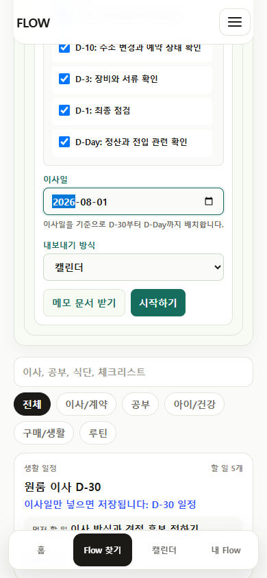
save
기대 저장 완료와 다음 행동을 바로 확인한다.
관찰 post-save 확인과 첫 실행 항목이 같은 실행 허브에 나타난다.

personalize
기대 한 번 정한 전체 기준일을 다시 바꾸고 싶다.
관찰 Flow 전체 기준일·이름 수정 입구가 보인다.
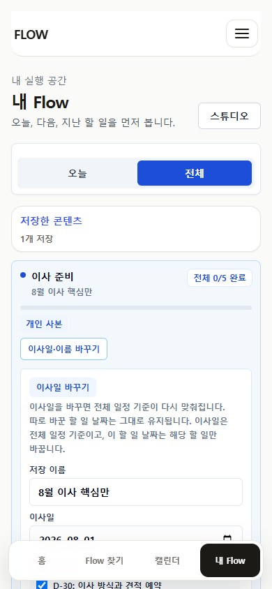
personalize
기대 전체 일정은 유지하고 한 항목만 늦춘다.
관찰 항목 날짜 override와 제목·날짜·메모 수정 입구가 분리된다.
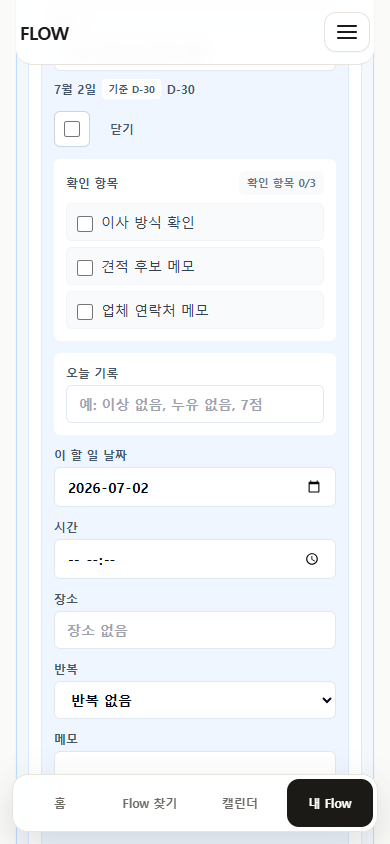
execute
기대 수정한 날짜에 맞춰 할 일을 확인한다.
관찰 날짜 agenda와 Flow 구분 marker가 저장 상태를 읽는다.
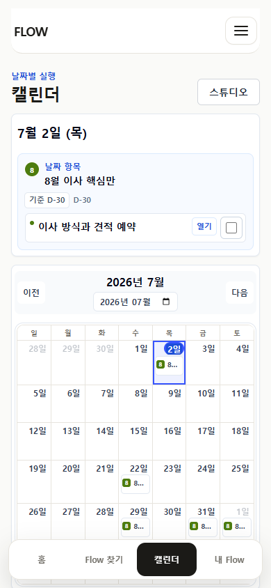
complete
기대 실수로 완료했을 때 되돌리고 싶다.
관찰 완료 0개 남음과 완료 취소 패턴은 확인됐지만 이사 Flow의 연속 장면은 별도 캡처가 없다.

review
기대 완료 경험과 빠진 준비를 남기고 싶다.
관찰 완료 뒤 유용성·만족도·한줄 리뷰 입력 표면이 없다.
request_revision
기대 개인 수정과 별개로 원본 개선을 요청하고 싶다.
관찰 개인 overlay는 있으나 원본/제작자에게 보내는 수정 요청 경로가 없다.
검색 중 찾은 낯선 URL이나 개인 메모를 바로 실행 가능한 초안으로 바꾸려는 사용자
목표 miss 상태에서도 앱 밖으로 나가지 않고 초안을 저장·수정·실행하고, 품질 문제를 나중에 피드백한다.
초안 생성부터 실행까지 가장 길게 연결됐지만 품질 회고와 실제 AI 경계가 다음 과제다.
convert
기대 찾지 못했을 때 다음 선택지를 알고 싶다.
관찰 miss가 요청 저장과 초안 준비 흐름으로 이어진다.

convert
기대 내가 남긴 요청을 다시 확인하고 고친다.
관찰 candidate detail에서 제목·메모·원 URL을 확인한다.

convert
기대 빈 placeholder가 아니라 손볼 수 있는 시작점을 기대한다.
관찰 결정론적 제안 항목과 기준일 날짜가 보인다.
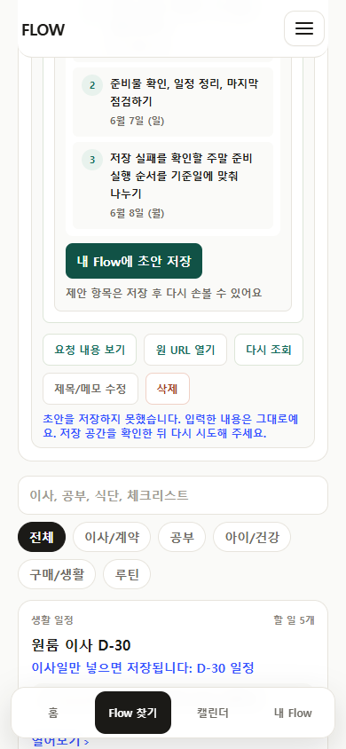
convert
기대 자동 생성인지 수동 초안인지 알고 싶다.
관찰 현재는 결정론적 초안이며 live AI로 과장하지 않는다.
return
기대 저장한 초안을 잃지 않고 다시 찾는다.
관찰 Studio 초안 탭에 같은 draft가 보인다.

personalize
기대 제안 항목을 내 말과 날짜로 고친다.
관찰 항목별 편집 입구와 사용자 메모가 있다.

personalize
기대 전체 날짜를 한 번에 이동한다.
관찰 기준일 변경과 개별 override 유지 정책이 보인다.
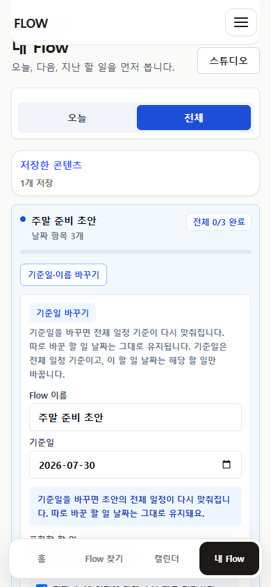
execute
기대 수정한 결과가 모든 목적지에서 같기를 기대한다.
관찰 Calendar와 export projection evidence가 연결된다.
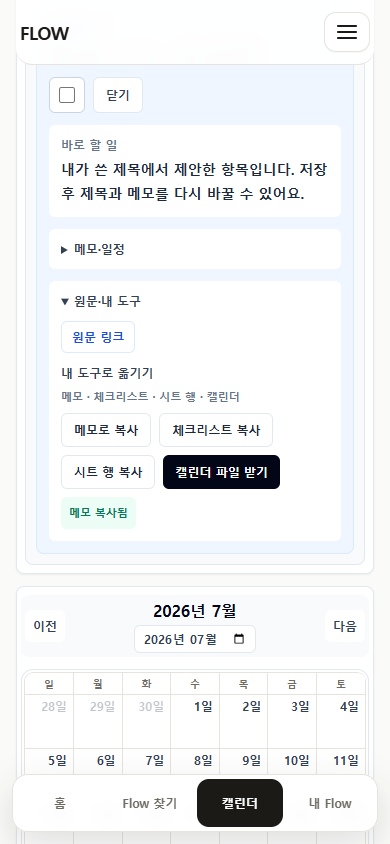
return
기대 실패해도 작성한 내용을 잃지 않는다.
관찰 입력 보존, 오류 설명, 재시도 행동이 있다.
reuse
기대 같은 초안을 여러 개 만들지 않고 기존 것을 연다.
관찰 중복 생성 없이 기존 My Flow 초안으로 이어진다.
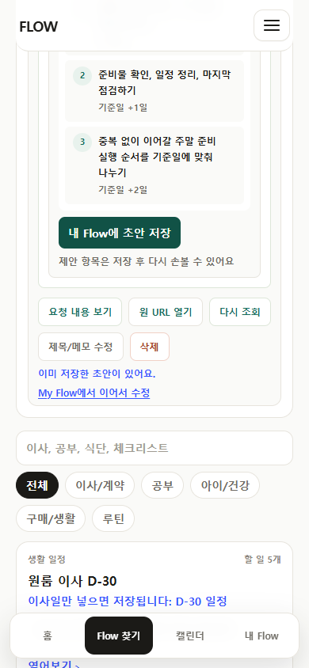
complete
기대 남은 일이 0임을 이해하고 필요하면 되돌린다.
관찰 전체 완료, 남은 0, 완료 취소 가능 상태가 보인다.
return
기대 네트워크가 끊겨도 현재 체크를 이어간다.
관찰 이미 열린 My Flow의 로컬 완료 행동이 유지된다.
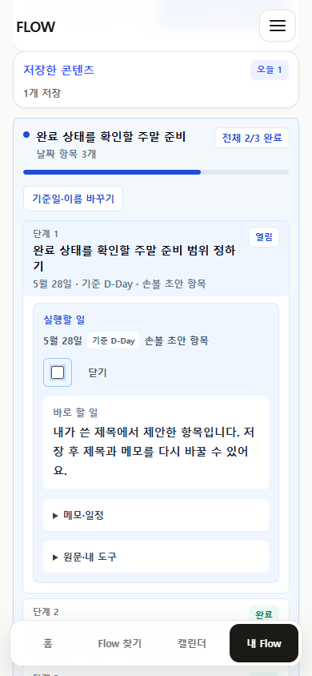
review
기대 초안이 유용했는지와 틀린 부분을 남긴다.
관찰 draft 품질 리뷰나 개선 요청의 사용자 경로가 없다.
메신저나 검색 결과로 public /f 링크를 열고 저장 여부를 빠르게 판단하는 사용자
목표 원문과 실행 항목을 신뢰할 수 있는지 보고 통째로 저장하거나 export한 뒤 개인 실행으로 전환한다.
저장 전후 경계는 명확해졌지만 개인 수정·외부 도구 왕복·콘텐츠 리뷰 연결이 부족하다.
discover
기대 무엇을 받게 되는지 먼저 본다.
관찰 공유 shell이 저장/setup을 첫 행동으로 둔다.
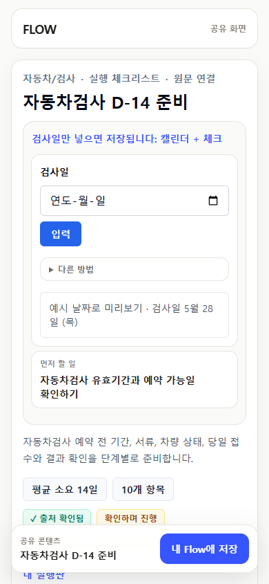
discover
기대 체크가 완료가 아니라 포함 preview임을 이해한다.
관찰 저장 전 선택과 저장 후 완료가 분리된다.
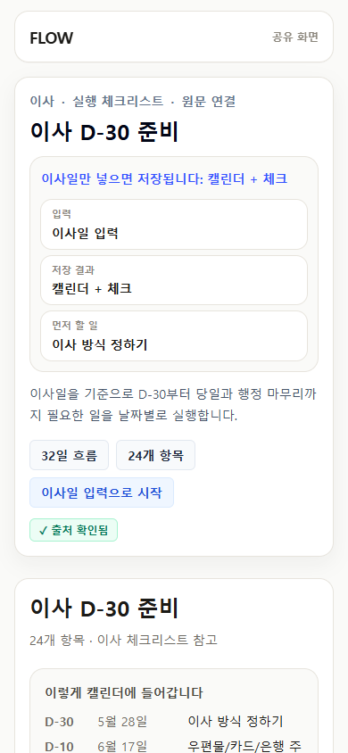
save
기대 전체 Flow를 Calendar·시트·메모로 가져간다.
관찰 export는 본문 secondary이며 sticky 저장보다 뒤에 있다.

execute
기대 저장 뒤 preview가 실제 실행 상태로 바뀐다.
관찰 같은 콘텐츠가 row-left 완료 체크 패턴으로 전환된다.

execute
기대 항목을 실행할 때 출처 맥락을 다시 본다.
관찰 반복 source link 없이 공통 source 접근과 항목 detail이 유지된다.
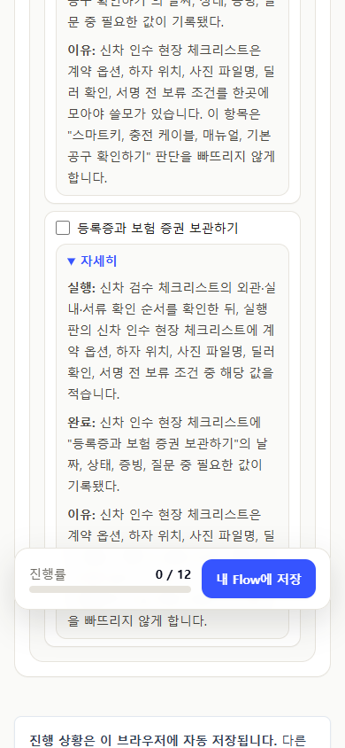
personalize
기대 저장한 공개 Flow도 제목·날짜·메모를 고치고 싶다.
관찰 overlay 모델은 있으나 public 저장 직후 같은 Flow를 편집하는 종단 capture가 없다.
execute
기대 내보낸 파일이 목적지에서 실사용 가능한지 확인한다.
관찰 export 생성은 검증됐지만 외부 도구 import·실행·재진입은 package가 증명하지 않는다.
return
기대 공유 링크가 아니라 내 실행 기록으로 돌아온다.
관찰 로컬 재방문은 가능하지만 계정·기기 간 연속성은 없다.
review
기대 다른 사용자와 제작자에게 도움이 된 정도를 남긴다.
관찰 public Flow 리뷰 표면이 없다.
request_revision
기대 잘못된 실행 항목을 원본 개선 요청으로 보낸다.
관찰 개인 수정과 콘텐츠 오류 신고를 분리한 경로가 없다.
이사·여행·공부 준비가 겹쳐 오늘 할 일과 같은 날짜 여러 Flow를 함께 관리하는 사용자
목표 복잡한 목록에서도 오늘 할 일을 먼저 끝내고 Calendar에서 Flow를 구분해 날짜를 조정한다.
밀도와 구분은 개선됐지만 대량 관리, 일괄 정리, 장기 회고 evidence가 약하다.
execute
기대 몇 번 들어가지 않고 오늘 일을 본다.
관찰 오늘 1프레임과 inline 완료가 우선한다.

return
기대 저장한 Flow가 많아도 마지막 항목까지 접근한다.
관찰 긴 목록 top/bottom과 fixed nav clearance가 확보된다.
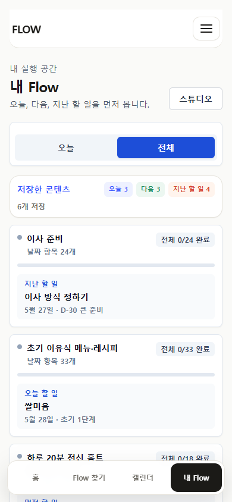

execute
기대 날짜 셀은 compact하게 보고 전체는 agenda에서 본다.
관찰 주요 2개 marker와 외 N개 요약이 보인다.

execute
기대 같은 날짜 모든 Flow와 할 일을 본다.
관찰 Flow별 group과 전체 항목이 표시된다.

execute
기대 데스크톱에서 날짜와 agenda를 동시에 비교한다.
관찰 grid와 agenda 2열이 overflow 없이 유지된다.

return
기대 밀린 일만 모아 다시 처리한다.
관찰 overdue sheet가 중복 row 없이 열린다.
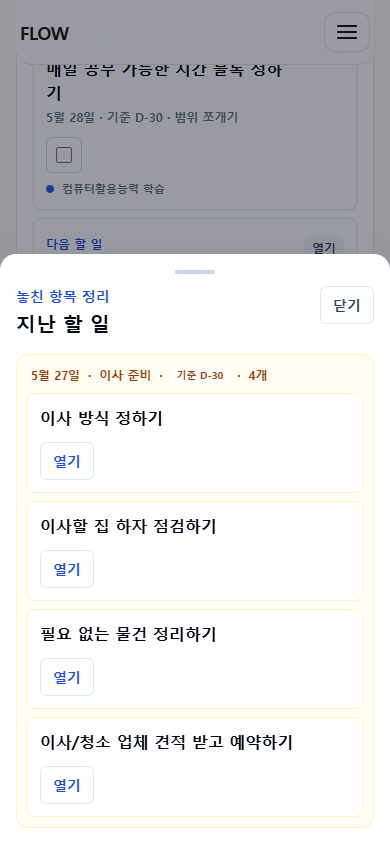
personalize
기대 다른 Flow 일정은 건드리지 않고 한 일만 미룬다.
관찰 항목 date override는 확인됐지만 다중 Flow 전환 장면은 별도 evidence가 없다.
return
기대 이미 연 목록에서 체크를 이어간다.
관찰 로컬 행동은 되지만 동기화·충돌 복구는 없다.
reuse
기대 완료한 Flow를 보관하고 다시 쓸지 판단한다.
관찰 완료 0 상태는 있으나 archive/reuse history 종단 evidence가 없다.
review
기대 어떤 부분이 반복해서 불편했는지 남긴다.
관찰 사용 경험 리뷰 경로가 없다.
교재나 학습 자료를 저장해 매일 조금씩 공부하고 진행 맥락을 확인하는 사용자
목표 날짜가 없거나 반복되는 학습 항목을 부담 없이 저장하고, 진행 숫자의 의미를 이해하며 다시 공부한다.
저장과 기본 실행은 가능하지만 반복 재사용·학습 기록·피드백의 종단 evidence가 적다.
discover
기대 교재 범위가 실행 항목으로 옮겨졌는지 본다.
관찰 source-backed 학습 Flow Map이 저장 경로를 제공한다.

save
기대 캘린더 강제 없이 바로 공부 항목을 본다.
관찰 undated content가 My Flow 할 일 중심으로 저장된다.

complete
기대 상세를 열지 않고 공부한 항목을 체크한다.
관찰 완료 control은 checkbox 한 종류로 유지된다.
execute
기대 전체 진도와 확인 항목 진도를 구분한다.
관찰 진행 숫자 맥락화 marker는 있으나 장기 학습 변화 화면은 제한적이다.
personalize
기대 내 교재 표현과 복습일로 바꾼다.
관찰 overlay 모델은 공통이지만 학습 Flow 편집 장면이 package에 없다.
reuse
기대 완료 기록을 남기고 같은 구조를 다시 쓴다.
관찰 반복 복제·새 주기 시작·이전 기록 비교가 증명되지 않는다.
review
기대 이해가 안 된 부분과 잘못 나눈 단원을 남긴다.
관찰 학습 결과 리뷰나 콘텐츠 수정 요청 경로가 없다.
자기 초안을 정리하고 다른 사람에게 공개할 수 있는지 확인하려는 보조 Studio 사용자
목표 초안을 다시 찾고 수정한 뒤, 향후 공개·버전 업데이트·사용자 피드백 반영 가능성을 판단한다.
초안 선반과 공개 profile은 있지만 제작→발행→리뷰→개정 loop는 아직 제품 경계 밖이다.
discover
기대 5번째 탭이 아닌 제작 보조 공간임을 이해한다.
관찰 filled Studio가 모바일에서 접근 가능하다.
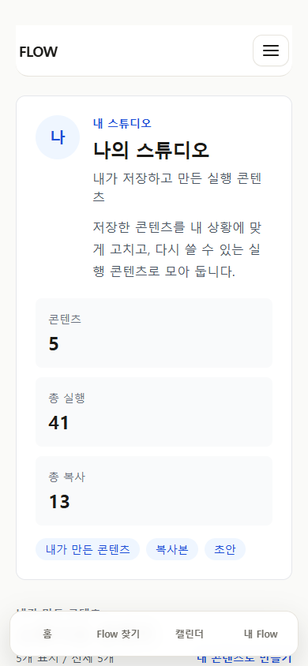
discover
기대 공개 콘텐츠와 개인 실행 공간을 구분한다.
관찰 public creator profile이 별도 사용자 표면으로 보인다.

return
기대 예전에 만든 초안을 다시 연다.
관찰 Studio draft shelf에 local draft card가 나타난다.
personalize
기대 별도 에디터가 아니라 검증된 수정 모델을 쓴다.
관찰 Studio card가 My Flow item edit path로 이어진다.
save
기대 검토 후 공개 링크를 만든다.
관찰 사용자용 publish/version gate가 없다.
request_revision
기대 틀린 항목 제보를 원본 개선 요청으로 받는다.
관찰 수정 요청 inbox나 항목 단위 연결이 없다.
review
기대 리뷰를 보고 개정 후 사용자에게 알린다.
관찰 리뷰·답변·changelog·업데이트 알림이 없다.
reuse
기대 원본이 바뀌면 개인 수정과 충돌 없이 업데이트한다.
관찰 update review 로직 테스트는 있으나 이번 사용자 여정 package의 시각 evidence가 없다.
복붙용 Claude Design 프롬프트 열기 · 구조화 evidence 열기 · Codex 독립 평가 열기